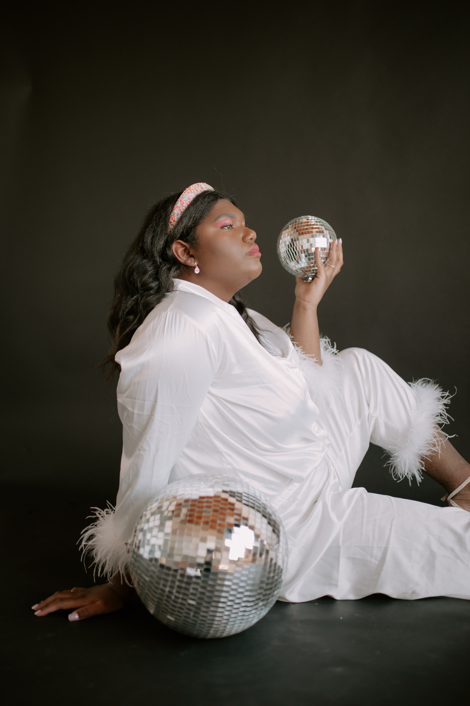
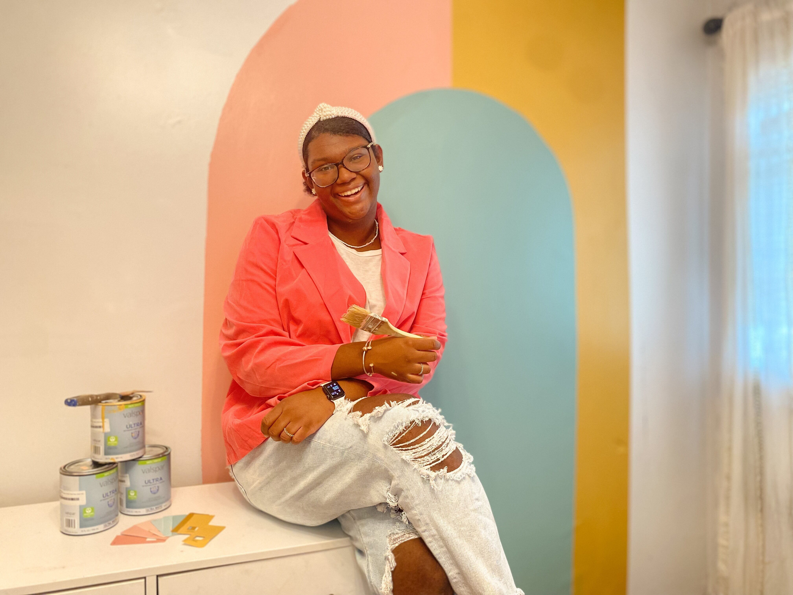
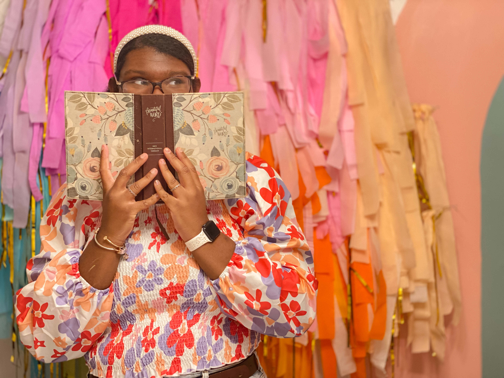

"I can only be me," is the one statement I realize and say to myself over the years. I tried being someone else- taking someone else identity and just tweaking a little bit, jusst to show some type of authenticity or I'll tone down who I was created to be because I want people to like me- a tendency of people pleasing, I soon realized. But, known I am not afraid to show people who Julia really is and I can walk confidently throughout life allowing people to get to know the really Julia. Hence, I'm simply just Julia, everyone going to get me- the encouraging side, loud side, the quiet side, the side thats loves flowers, but also the side that loves football, creative side, brutally honest side that has no chill (but, I am working on holding my tongue).
When I am not working or completing assignments, I can be found letting my creative reach another level and creating just to create. Whether that is creating a graphic that can be added to my portfolio or frame it for my gallery wall or add to my socials, rearranging and decorating my room, compeleting a DIY project, creating pinterest board that future Julia will be thankful for, designing and making clay earrings or simply reading.
I always have been a curious person, always want to grow as a person, being the best I can be and that comes from the thirsty for knowledge. Just like my hobbies, my interest is center around be creative is some aspect and being social, for instance I am interested in branding photographer, learning sign language, finding ways to grow closer to God, volunteering at my church non-profit organization- JBC Cares.
I believe my purpose in life is to lead people back to God-Whom we were we created for in the first place. God has gives us all different talents and giftings to do help others as while also leading people to Jesus Christ. I see my career goals being used to glorify God by teaching a characteristic of God, which is He's creative because He's the Creator of the things we see and unsee; which means God made us to also be creative because we were made in His Image. Another is bringing the lost and encourage the brokenhearted to come to Jesus because Jesus died so that we can be whole and we can trust Him with our broken pieces because He can take those pieces and always make something beautiful.
My career goals includes: